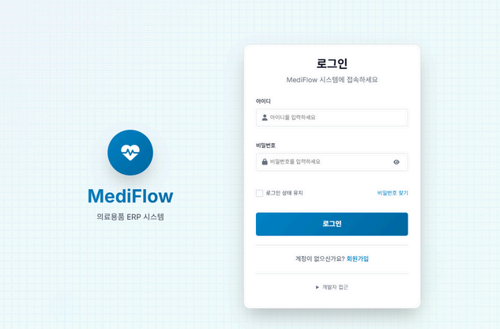
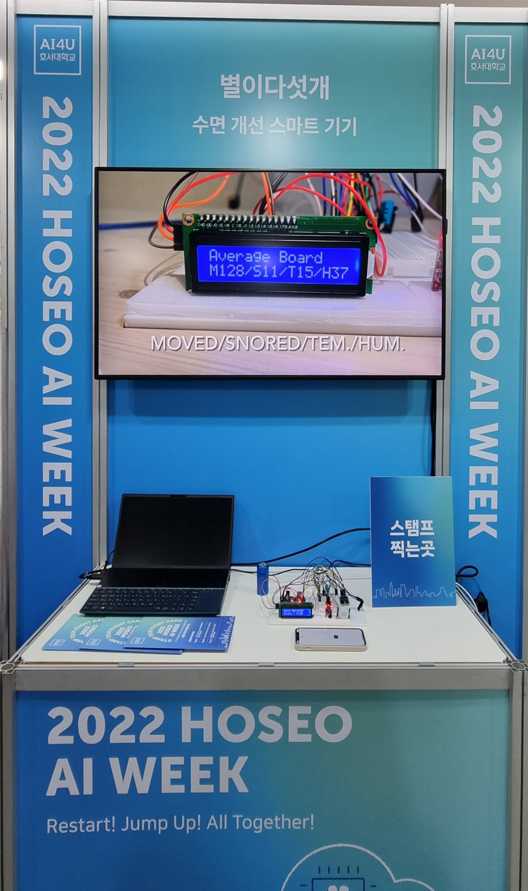

저는 사무직 경험으로 사용자의 불편함을 가장 먼저 이해하고, 진실로 필요한 가치를 구현합니다. 동료들과 투명하게 소통하며 문제를 함께 해결하고, 식지 않는 열정으로 팀의 성과를 높이는 데 기여하겠습니다.
다양한 기술을 활용하여 문제를 해결합니다
머신러닝과 딥러닝으로 실제 문제를 해결합니다
고객의 접속 빈도, 결제 패턴 등 24가지 데이터를 분석해 이탈 위험을 95.2% 정확도로 예측하는 머신러닝 모델을 개발했습니다.
EfficientNet-B0과 Claude Sonnet 4.5를 결합하여 99.86% 정확도로 주조 제품 결함을 자동 검사하고 전문가 수준의 분석 리포트를 생성하는 시스템을 개발했습니다.
전체적인 시스템 개발 경험을 소개합니다
C 언어로 소켓 프로그래밍, 멀티스레딩, I/O 멀티플렉싱을 활용하여 완전한 기능의 FTP 프로토콜을 구현했습니다.
Java와 Oracle DB를 활용하여 실제 은행의 핵심 기능(입출금, 이체, 이자 계산)을 구현한 완전한 은행 관리 시스템입니다.

JSP와 Oracle DB 기반으로 환자, 의료진, 재고, 주문, 인사를 통합 관리하는 병원 운영 효율화 시스템을 개발했습니다.
Google Gemini 2.0 Flash API를 활용하여 실시간 AI 채팅 인터페이스를 구현하고, 타이핑 인디케이터와 자동 스크롤 기능을 통해 향상된 사용자 경험을 제공합니다.

Arduino, RaspberryPi, ESP8266을 연동하여 온습도, 소음, 수면 시간을 측정하고 Blink 앱으로 실시간 모니터링하는 IoT 기반 수면 개선 디바이스를 개발했습니다.
FTP 클라이언트와 서버간의 통신을 통해 소켓 프로그래밍의 기초와 파일 전송 설계 단계를 구현함으로써 통신의 기본적인 개념을 학습할 수 있었습니다.
거래 한도, 이자율 등 실제 금융 시스템의 비즈니스 로직을 조사하고 구현해봄으로써 좀 더 실무 수준에 가까운 시스템을 구축해볼 수 있어 좋은 경험이었습니다.
팀원들과의 협업을 통해 초기 기획과 설계의 중요성을 느낄 수 있었고, 팀원 간 효과적인 소통과 협업 방식을 습득할 수 있었습니다.
API 통신의 중요성을 경험하며 비동기 처리와 에러 핸들링이 사용자 경험에 미치는 영향이 크다는 것을 체감했습니다.
캡스톤 대회 우수상을 수상하였으며, 이 프로젝트를 통해 IoT와 임베디드 시스템에 친숙해지는 좋은 계기가 되었습니다.
머신러닝 파이프라인 전체 과정(전처리→학습→평가→배포)을 경험했으며, 단순 모델 정확도보다 실무 적용성이 중요함을 깨달았습니다.
EfficientNet-B0 전이학습으로 99.86% 정확도를 달성하고 Claude Sonnet 4.5 LLM을 통합하여 전문가 수준의 분석 리포트를 자동 생성함으로써, 단순 딥러닝 분류를 넘어 Grad-CAM과 LLM을 결합한 설명 가능하고 실무 적용 가능한 AI 시스템을 구축한 경험을 얻었습니다.